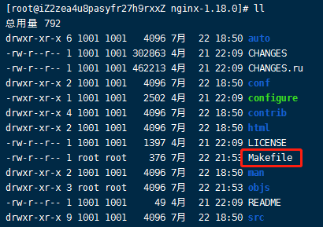
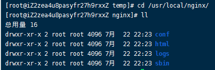
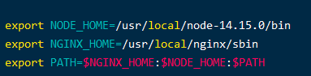

002-nginx的安装
nginx是C语言开发的，安装ngixn需要经过c编译再安装
1、安装依赖
gcc-c++: 编译C语言用到pcre: 一个Perl库，包括perl兼容的正则表达式库。nginx的http模块使用pcre来解析正则表达式zlib: nginx使用zlib对http包的内容进行gzip，所以需要在linux上安装zlib库openssl: nginx不仅支持http协议，还支持https（即在 ssl 协议上传输 http），所以需要在linux安装openssl库。yum install -y gcc-c++
yum install -y pcre pcre-devel
yum install -y zlib zlib-devel
yum install -y openssl openssl-devel
## 2、下载对应版本
从[官网](http://nginx.org/en/download.html)下载对应版本

## 3.上传到服务器
上传到`/usr/local/temp/nginx-temp`里面，执行解压命令`tar -zxvf nginx-1.18.0.tar.gz`
解压后的路径`/usr/local/temp/nginx-temp/nginx-1.18.0`

## 4、安装nginx
1. 进入解压后的目录，执行configure
```shell
cd nginx-1.18.0
./configure # 执行configure命令，执行完会生成Makefile

执行configure的时候，可以带参数
./configure \
--prefix=/usr \ # 指向安装目录
--sbin-path=/usr/sbin/nginx \ # 指向（执行）程序文件（nginx）
--conf-path=/etc/nginx/nginx.conf \ # 指向配置文件
--error-log-path=/var/log/nginx/error.log \ # 指向log
--http-log-path=/var/log/nginx/access.log \ # 指向http-log
--pid-path=/var/run/nginx/nginx.pid \ # 指向pid
--lock-path=/var/lock/nginx.lock \ # （安装文件锁定，防止安装文件被别人利用，或自己误操作。）
--user=nginx \
--group=nginx \
--with-http_ssl_module \ # 启用ngx_http_ssl_module支持（使支持https请求，需已安装openssl）
--with-http_flv_module \ # 启用ngx_http_flv_module支持（提供寻求内存使用基于时间的偏移量文件）
--with-http_stub_status_module \ # 启用ngx_http_stub_status_module支持（获取nginx自上次启动后到现在为止的工作状态）
--with-http_gzip_static_module \ # 启用ngx_http_gzip_static_module支持（在线实时压缩输出数据流）
--http-client-body-temp-path=/var/tmp/nginx/client/ \ # 设定http客户端请求临时文件路径
--http-proxy-temp-path=/var/tmp/nginx/proxy/ \ # 设定http代理临时文件路径
--http-fastcgi-temp-path=/var/tmp/nginx/fcgi/ \ # 设定http fastcgi临时文件路径
--http-uwsgi-temp-path=/var/tmp/nginx/uwsgi \ # 设定http uwsgi临时文件路径
--http-scgi-temp-path=/var/tmp/nginx/scgi \ # 设定http scgi临时文件路径
--with-pcre # 启用pcre库
执行./configure --help可以查看所有支持的参数
一般的，执行这个就可以
./configure \
--prefix=/usr/local/nginx-1.18.0 \
--with-http_stub_status_module \
--with-http_ssl_module
--prefix: 指定安装目录--with-http_stub_status_module: 可以查看nginx的运行状态，详见009-nginx状态--with-http_ssl_module: 支持https
- 执行编译安装
make # 编译 make install # 安装
nginx默认安装在/usr/local/nginx/这里，进入该目录

- 启动nginx
./nginx # 启动nginx
ps aux|grep nginx # 查看进程
./nginx -s stop # 停止nginx
启动nginx后，就可以通过浏览器访问`http://59.110.21.75/`

#### 5. 配置命令到环境变量
通过上面的方式配置的nginx，每次需要进入到`/usr/local/nginx/sbin` 才能执行nginx命令，如果觉得麻烦，可以把nginx命令配置到环境变量里面，这样在任何目录都可以自行
```shell
vim /etc/profile
在最后面添加
NGINX_HOME=/usr/local/nginx/sbin
export PATH=$NGINX_HOME:$PATH

截图里面是因为以前自己还配置过node的环境变量
然后重启
source /etc/profile
这样就可以随时执行nginx命令了
nginx -v # 小写v 查看nginx版本
nginx -V # 大写V 查看当初安装nginx的命令